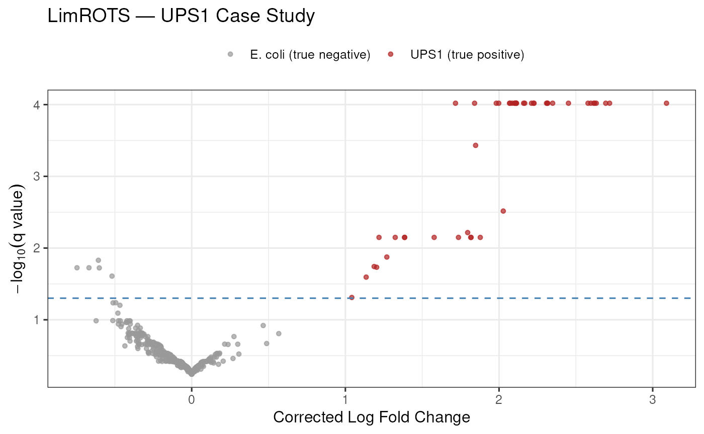
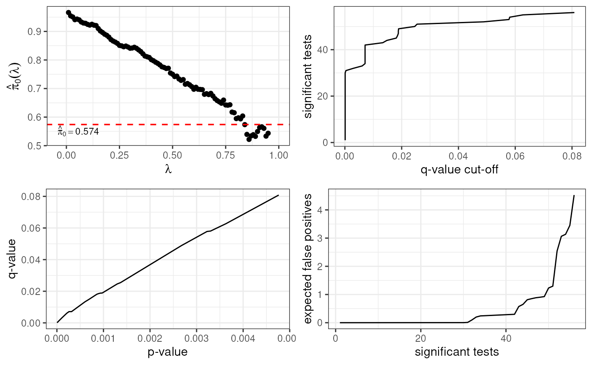
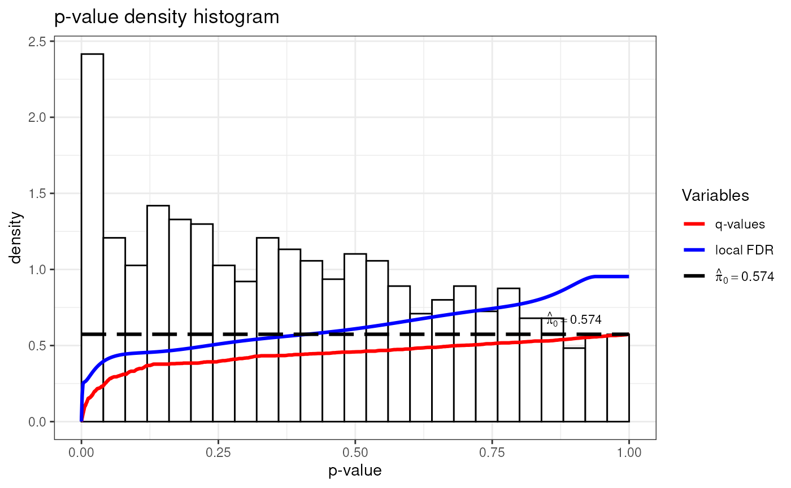

vignettes/LimROTS.Rmd
LimROTS.RmdDifferential expression analysis is commonly used to study diverse biological datasets. The reproducibility-optimized test statistic (ROTS) (Elo et al., 2008) uses a modified t-statistic to prioritise features that differ between two or more groups. However, the ROTS Bioconductor implementation (Suomi et al., 2017) did not accommodate technical or biological covariates. LimROTS (Anwar et al., 2025) addressed this limitation by combining a reproducibility-optimized test statistic with the limma empirical Bayes approach (Ritchie et al., 2015). This enables the analysis of more complex experimental designs and the incorporation of covariates. These validated solutions were made in Bioconductor development version 3.20 and the subsequent release 3.21. Related but different linear modeling features were subsequently incorporated also into ROTS Bioconductor package, but have not been formally published to our knowledge. Both ROTS and LimROTS added linear model extensions for survival analysis in the Bioconductor devel version 3.23.
If you use LimROTS in your research, please cite:
Anwar, A. M., Jeba, A., Lahti, L., & Coffey, E. (2025). LimROTS: A Hybrid Method Integrating Empirical Bayes and Reproducibility-Optimized Statistics for Robust Differential Expression Analysis. Bioinformatics, btaf570. https://doi.org/10.1093/bioinformatics/btaf570
LimROTS is a standalone package that extends ROTS (Elo et al., 2008; Tomi Suomi et al., 2017) and the limma (Ritchie ME et al., 2015) framework. It is a newly developed, independently implemented method that incorporates covariates in reproducibility-optimized testing. LimROTS is not affiliated with, endorsed by, or maintained by the original ROTS or limma developers. Users are advised to cite the original publications when referencing these methods.
ROTS: Elo LL, Filén S, Lahesmaa R, Aittokallio T. Reproducibility-optimized test statistic for ranking genes in microarray studies. IEEE/ACM Transactions on Computational Biology and Bioinformatics. 2008;5(3):423–31.
Suomi T, Seyednasrollah F, Jaakkola MK, Faux T, Elo LL (2017) ROTS: An R package for reproducibility-optimized statistical testing. PLOS Computational Biology 13(5): e1005562. https://doi.org/10.1371/journal.pcbi.1005562
limma: Ritchie ME, Phipson B, Wu D, Hu Y, Law CW, Shi W, Smyth GK. limma powers differential expression analyses for RNA-sequencing and microarray studies. Nucleic Acids Research. 2015;43(7):e47. https://doi.org/10.1093/nar/gkv007
The LimROTS workflow proceeds as follows:
where is the optimized statistic, is the model coefficient, and is the adjusted standard error.
P-values are derived from permutation-based null distributions using
the qvalue package Storey et al.
(2024). FDR is estimated using an internal implementation adapted
from ROTS Suomi et al. (2017), and
q-values are computed via the bootstrap method for the proportion of
true null hypotheses.
LimROTS runtime depends on four primary factors: the number of
samples, features, bootstrap iterations (niter), and the
top list size (K). The bootstrapping step is parallelized
using BiocParallel Morgan et al.
(2024); we recommend using at least 4 workers for routine
analyses. The optimization step is sequential and may be time-consuming
for large values of K.
LimROTS() is the primary interface for end users. For a
full description of all parameters, refer to the function
documentation:
?LimROTSTo illustrate LimROTS in a realistic multi-covariate scenario, we use a DIA proteomics dataset from a UPS1-spiked E. coli protein mixture Gotti et al. (2022). The dataset contains 1,656 proteins measured across 48 samples: 24 processed with Spectronaut and 24 with ScaffoldDIA. Eight UPS1 concentrations (0.1–50 fmol) are grouped into two conditions:
Conc. 2): 12 samples per software.Conc. 1): 12 samples per software.A synthetic unbalanced batch variable (fake.batch) was
assigned across samples with the following distribution:
#>
#> 1 2
#> F 18 6
#> M 6 18Additionally, a simulated batch effect was introduced: an effect size of 10 was added to 100 randomly selected E. coli proteins log2 values in one of the fake batches. The expected result is that only the 48 UPS1 human proteins are truly differentially expressed; no E. coli protein should show a genuine concentration effect.
This scenario mirrors real-world conditions such as unbalanced batch structures or unequal covariate distributions across groups.
library(LimROTS, quietly = TRUE)
library(BiocParallel, quietly = TRUE)
library(ggplot2, quietly = TRUE)
library(SummarizedExperiment, quietly = TRUE)
data("UPS1.Case4")
print(UPS1.Case4)
#> class: SummarizedExperiment
#> dim: 1656 48
#> metadata(0):
#> assays(1): norm
#> rownames(1656): O00762_HUMAN O76070_HUMAN ... Q59385_ECOLI Q93K97_ECOLI
#> rowData names(2): GeneID Description
#> colnames(48): UPS1_0_1fmol_inj1_x UPS1_0_1fmol_inj2_x ...
#> UPS1_50fmol_inj2_y UPS1_50fmol_inj3_y
#> colData names(4): SampleID tool Conc. fake.batchSet a seed before running LimROTS to ensure reproducibility.
set.seed(1234, kind = "default", sample.kind = "default")Note: The group column in
colDatamust be afactorwith levels defined in the intended contrast order. For example,Conc. 1(high) vsConc. 2(low) reports the fold-change as high − low. Define this explicitly if needed:
# Define analysis parameters
meta.info <- c("Conc.", "tool", "fake.batch")
niter <- 100 # bootstrap iterations (use >= 1000 for real analyses)
K <- 100 # top list size for reproducibility optimization
formula.str <- "~ 0 + Conc. + tool + fake.batch"
# Run LimROTS
UPS1.Case4 <- LimROTS(
x = UPS1.Case4,
niter = niter,
K = K,
meta.info = meta.info,
group = "Conc.",
formula.str = formula.str,
trend = TRUE,
robust = TRUE,
permutating.group = FALSE
)
#> Data is SummarizedExperiment object
#> Assay: norm will be used
#> Group Level: 1 & Group Level: 2
#> Initiating limma on bootstrapped samples
#> Using MulticoreParam (Unix-like OS) with two workers.
#> Optimizing a1 and a2
#> Computing p-values and FDRNote:
niter = 100andK = 100are used here to reduce vignette build time. For production analyses, useniter = 1000or higher. We also recommend at least 4 parallel workers.
To increase the number of workers, pass a BPPARAM
argument:
# Windows
# BPPARAM <- SnowParam(workers = 4)
# Linux / macOS
# BPPARAM <- MulticoreParam(workers = 4)
# Pass to LimROTS via: LimROTS(..., BPPARAM = BPPARAM)The results are appended directly to the rowData and
metadata slots of the input
SummarizedExperiment object.
The volcano plot below shows corrected log-fold changes versus (q-value). At a 5% q-value threshold, LimROTS recovers the majority of true UPS1 human proteins while flagging very few E. coli proteins.
# Extract results
result_df <- data.frame(
rowData(UPS1.Case4),
row.names = rownames(UPS1.Case4)
)
# Annotate proteins
result_df$label <- ifelse(
grepl("HUMAN", result_df$GeneID),
"UPS1 (true positive)",
"E. coli (true negative)"
)
ggplot(result_df, aes(
x = corrected.logfc,
y = -log10(qvalue),
color = label
)) +
geom_point(alpha = 0.7, size = 1.2) +
geom_hline(
yintercept = -log10(0.05),
linetype = "dashed",
color = "steelblue"
) +
scale_color_manual(values = c(
"E. coli (true negative)" = "grey60",
"UPS1 (true positive)" = "firebrick"
)) +
labs(
title = "LimROTS \u2014 UPS1 Case Study",
x = "Corrected Log Fold Change",
y = expression(-log[10](q~value)),
color = NULL
) +
theme_bw(base_size = 12) +
theme(legend.position = "top")
LimROTS produces permutation-derived p-values and q-values that can be inspected visually. These are the recommended primary inference statistics.


sessionInfo()
#> R version 4.6.0 (2026-04-24)
#> Platform: x86_64-pc-linux-gnu
#> Running under: Ubuntu 24.04.4 LTS
#>
#> Matrix products: default
#> BLAS: /usr/lib/x86_64-linux-gnu/openblas-pthread/libblas.so.3
#> LAPACK: /usr/lib/x86_64-linux-gnu/openblas-pthread/libopenblasp-r0.3.26.so; LAPACK version 3.12.0
#>
#> locale:
#> [1] LC_CTYPE=en_US.UTF-8 LC_NUMERIC=C
#> [3] LC_TIME=en_US.UTF-8 LC_COLLATE=en_US.UTF-8
#> [5] LC_MONETARY=en_US.UTF-8 LC_MESSAGES=en_US.UTF-8
#> [7] LC_PAPER=en_US.UTF-8 LC_NAME=C
#> [9] LC_ADDRESS=C LC_TELEPHONE=C
#> [11] LC_MEASUREMENT=en_US.UTF-8 LC_IDENTIFICATION=C
#>
#> time zone: UTC
#> tzcode source: system (glibc)
#>
#> attached base packages:
#> [1] stats4 stats graphics grDevices utils datasets methods
#> [8] base
#>
#> other attached packages:
#> [1] ggplot2_4.0.3 BiocParallel_1.45.0
#> [3] LimROTS_1.4.0 SummarizedExperiment_1.42.0
#> [5] Biobase_2.72.0 GenomicRanges_1.64.0
#> [7] Seqinfo_1.2.0 IRanges_2.46.0
#> [9] S4Vectors_0.50.0 BiocGenerics_0.58.0
#> [11] generics_0.1.4 MatrixGenerics_1.24.0
#> [13] matrixStats_1.5.0 BiocStyle_2.40.0
#>
#> loaded via a namespace (and not attached):
#> [1] Rdpack_2.6.6 bitops_1.0-9 rlang_1.2.0
#> [4] magrittr_2.0.5 otel_0.2.0 compiler_4.6.0
#> [7] systemfonts_1.3.2 vctrs_0.7.3 reshape2_1.4.5
#> [10] stringr_1.6.0 pkgconfig_2.0.3 fastmap_1.2.0
#> [13] backports_1.5.1 XVector_0.52.0 labeling_0.4.3
#> [16] caTools_1.18.3 rmarkdown_2.31 nloptr_2.2.1
#> [19] ragg_1.5.2 purrr_1.2.2 xfun_0.57
#> [22] cachem_1.1.0 jsonlite_2.0.0 EnvStats_3.1.0
#> [25] remaCor_0.0.20 DelayedArray_0.38.0 broom_1.0.12
#> [28] parallel_4.6.0 R6_2.6.1 bslib_0.10.0
#> [31] stringi_1.8.7 RColorBrewer_1.1-3 limma_3.68.0
#> [34] boot_1.3-32 jquerylib_0.1.4 numDeriv_2016.8-1.1
#> [37] Rcpp_1.1.1-1.1 bookdown_0.46 iterators_1.0.14
#> [40] knitr_1.51 Matrix_1.7-5 splines_4.6.0
#> [43] tidyselect_1.2.1 qvalue_2.44.0 abind_1.4-8
#> [46] yaml_2.3.12 gplots_3.3.0 codetools_0.2-20
#> [49] lattice_0.22-9 tibble_3.3.1 lmerTest_3.2-1
#> [52] plyr_1.8.9 withr_3.0.2 S7_0.2.2
#> [55] evaluate_1.0.5 desc_1.4.3 survival_3.8-6
#> [58] pillar_1.11.1 BiocManager_1.30.27 KernSmooth_2.23-26
#> [61] reformulas_0.4.4 scales_1.4.0 aod_1.3.3
#> [64] minqa_1.2.8 gtools_3.9.5 RhpcBLASctl_0.23-42
#> [67] glue_1.8.1 tools_4.6.0 fANCOVA_0.6-1
#> [70] variancePartition_1.42.0 lme4_2.0-1 mvtnorm_1.3-7
#> [73] fs_2.1.0 grid_4.6.0 tidyr_1.3.2
#> [76] rbibutils_2.4.1 nlme_3.1-169 cli_3.6.6
#> [79] textshaping_1.0.5 S4Arrays_1.12.0 dplyr_1.2.1
#> [82] corpcor_1.6.10 gtable_0.3.6 sass_0.4.10
#> [85] digest_0.6.39 SparseArray_1.12.0 pbkrtest_0.5.5
#> [88] htmlwidgets_1.6.4 farver_2.1.2 htmltools_0.5.9
#> [91] pkgdown_2.2.0 cmprsk_2.2-12 lifecycle_1.0.5
#> [94] statmod_1.5.1 MASS_7.3-65